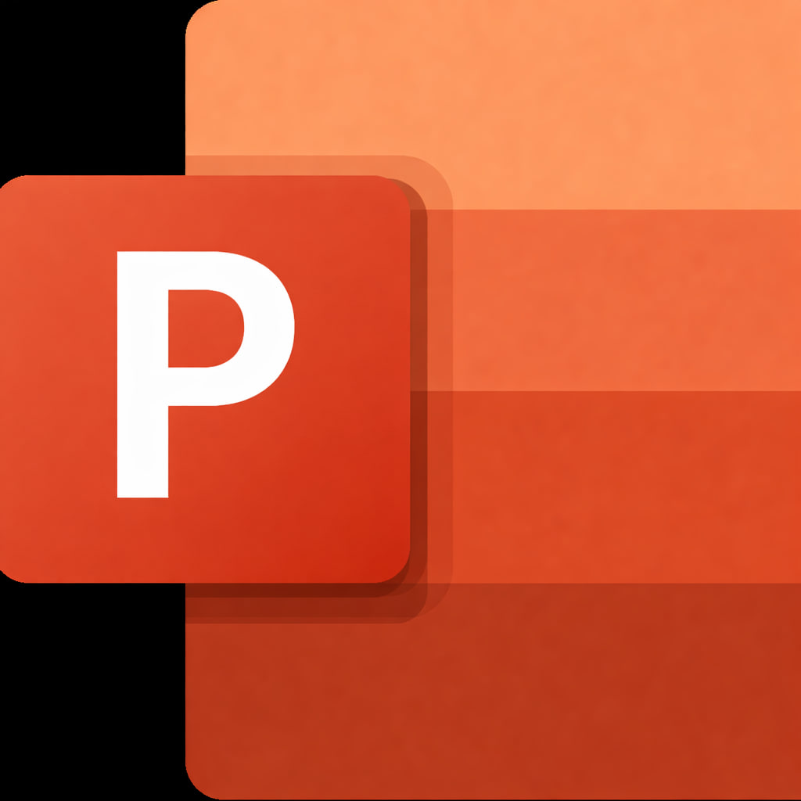
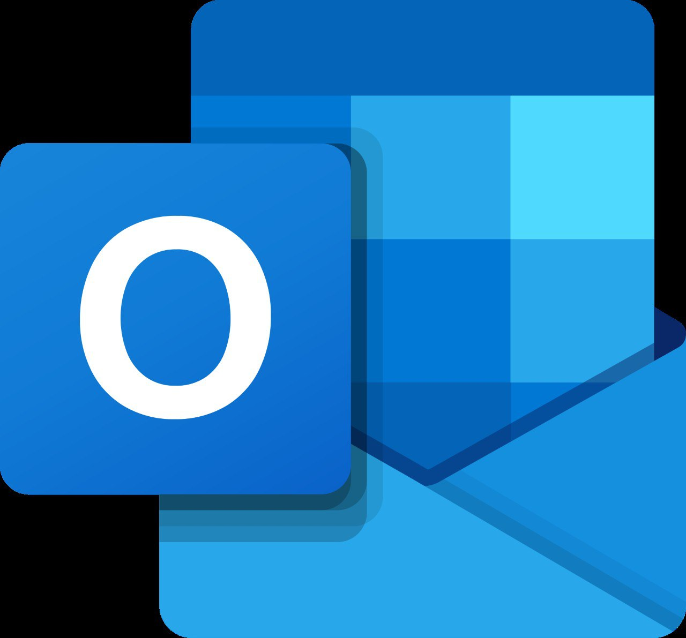

Microsoft Office is a comprehensive suite of desktop and cloud applications designed to facilitate professional document creation, data management, and visual communication. It remains the global benchmark for productivity in academic and corporate environments.
Microsoft Office provides a robust set of tools that cater to specialized professional needs. While Word handles text, Excel manages numbers, and PowerPoint delivers visuals, together they form a complete ecosystem that empowers users to produce high-quality professional output.
The primary applications:
Word is the leading tool for creating and formatting professional documents.
It offers a wide range of features, including sophisticated templates, grammar and
style checking, and desktop publishing capabilities. It is essential for writing reports,
letters, resumes, and academic papers with a high level of precision.
Excel is a powerful engine for organizing, calculating, and analyzing numerical
data.
Through the use of complex formulas, pivot tables, and advanced graphing tools,
it enables
users to perform financial modeling, statistical analysis, and database
management. It is a
critical tool for data-driven decision-making.
PowerPoint is designed for visual storytelling and professional presentations. It
allows
users to combine text, images, animations, and multimedia to deliver impactful
messages. With its
diverse slide layouts and transition effects, it helps speakers
communicate complex ideas effectively
to an audience.

Microsoft Outlook is a professional personal information manager that goes
beyond simple email
exchange. It serves as the primary communication hub for
organizations, integrating email, scheduling,
and task management into a single,
unified interface.
